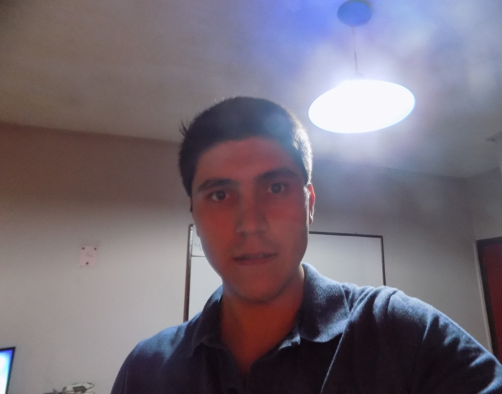

Sobre mí
A lo largo de mi formación académica y mis proyectos personales, he adquirido habilidades sólidas en Javascript, Typescipt, React, Nextjs, Node.js, Express, Mongo DB, PostgreSQL. Predispuesto a trabajar en equipo y en un entorno de trabajo colaborativo. En busqueda de mi primera experiencia laboral en el campo y la oportunidad de enfrentar nuevos desafíos. Con ganas de aprender y crecer en el mundo del desarrollo de software. A su disposición para cualquier pregunta o información adicional que pueda necesitar.